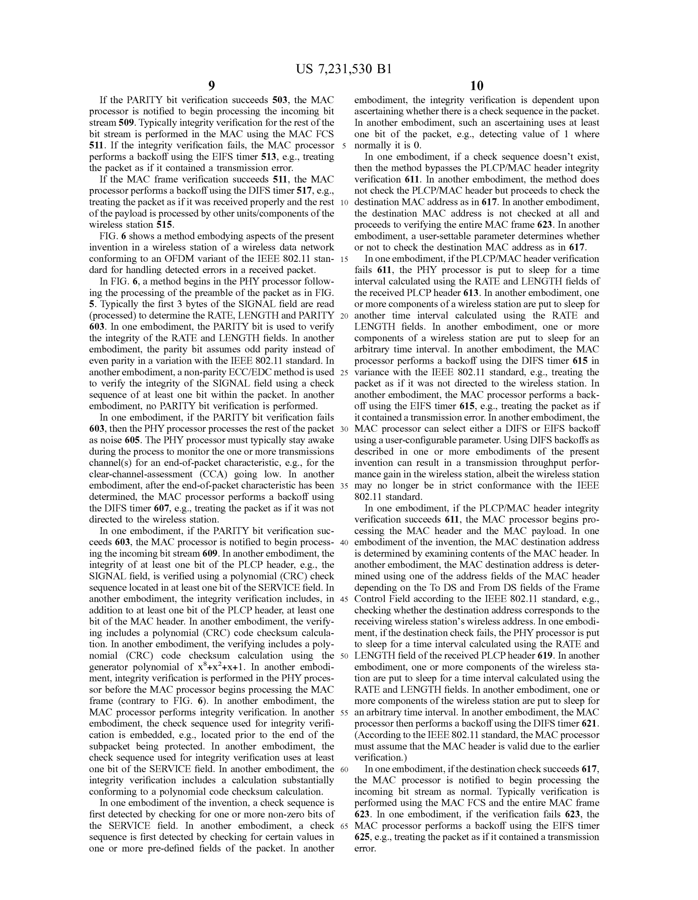

Preamble 7pre · A 98
The radio of an IEEE 802.11n station: a host interface, a baseband processing module, memory, radio transmitters and antennas.
Literal and in plain words; the date is undisputed.
Ref. 1 · US 2005/0181800 A1 · [0033] · FIG. 2
Electrical engineering · Communications
Frame order, scrambler bits and a CRC carried in the service field.
The technical question
The research approach
The chart connects earlier WLAN signaling formats with a service-field integrity check. A separately stated multi-user alternative addresses another reading of the signal fields.
Inspect the exact field, bit allocation and source location behind a proposed mapping.
Inside a submitted claim chart
Sol IP · US 10,090,894 B2
Claim 7 · Obviousness · C, hold 41
Select a limitation to inspect the original reference page and its highlighted evidence.
Limitation 7f2 · C 63 · Weakest
The Cisco patent’s SERVICE field holds the seven scrambler-initialization bits and, in its unused bits, a polynomial (CRC) check sequence protecting the SIGNAL field.
Passages on the original page
the integrity of at least one bit of the PLCP header, e.g., the SIGNAL field, is verified using a polynomial (CRC) check sequence located in at least one bit of the SERVICE field.
Ref. 2 · Miller et al., US 7,231,530 B1 · Columns 9–10
What the score reflects
The weakest limitation. The reference is literal; the open point is the reason to put that check into the first reference’s frame, stated in the art but live against the first reference’s own 4-bit CRC in each signal field and the check protecting the legacy signal field rather than a second one.
Ref. 2 · US 7,231,530 B1 · Column 9, lines 41–44
Original reference · Ref. 2
United States patent · Cisco Technology · Issued 12 June 2007

The page image could not load. Open the original PDF below to inspect the reference.
Public copy of the patent document as published by its patent office; served by Google Patents.
Original document page. Highlights identify the quoted passages.
Recorded assessment: 18 October 2026. Scores assess the evidence for this ground; they are not probabilities of invalidity. W1 is the reading of the two signal fields and W2 the reading of the extended preamble as a training field; both are claim-wide points.
The radio of an IEEE 802.11n station: a host interface, a baseband processing module, memory, radio transmitters and antennas.
Literal and in plain words; the date is undisputed.
Ref. 1 · US 2005/0181800 A1 · [0033] · FIG. 2
Memory 66, a single memory device or a plurality of memory devices.
Literal and in plain words.
Ref. 1 · [0033]
The baseband processing module, with the operational instructions stored in memory, executes the digital transmitter functions, formats the frame and sends it through the transmitter section.
A synonym of “processor”, no gap. The fields it generates and sends are rated at 7b1 to 7b5.
Ref. 1 · [0033], [0065] · FIG. 10
Signal field 142 is the first signal field, common to every receiver: it tells legacy devices the frame’s duration and the newer devices the channel usage and the number of transmit antennas.
Literal once the reading of the two signal fields holds; held to W1.
Ref. 1 · [0065]
Each additional signal field, one before each data unit, carries the rate, the length, the last-PSDU flag, the acknowledgement request and the error check for its own data unit.
Literal once the reading holds; held to W1.
Ref. 1 · [0066]
Each data unit opens with the 802.11 Service field, and the transmitter scrambles the data; the Cisco patent’s prior-art figures show what that field holds.
The owner can argue that the reference names the field without describing it; the 802.11 Service field it names settles that.
Ref. 1 · [0065] · Ref. 2 · Column 5, lines 64–67
The PSDU of each Service/PSDU unit, made of data symbols, whose length the additional signal field counts in bytes.
Literal.
Ref. 1 · [0064] · FIG. 8
Signal field 142 is among the fields of the transmitted frame, which the transmitter section converts into outbound RF signals.
Literal once signal field 142 is the VHT-SIG A field; held to W1.
Ref. 1 · [0065] · FIG. 10
The frame draws the signal field, then the extended preamble, whose format is the supplemental long training sequences drawn after the signal field.
Literal once both readings hold: W1 and W2.
Ref. 1 · [0065] · FIGS. 8 and 10
The frame draws the extended preamble, then the first additional signal field; the supplemental long training sequences come before the high data signal field.
Held to W1 and W2.
Ref. 1 · [0065] · FIG. 10
Each additional signal field is followed by its data unit, which opens with the Service field.
Literal once the reading holds; held to W1.
Ref. 1 · [0065] · FIG. 10
In both references the PSDU follows the SERVICE field: the Cisco patent’s SIGNAL field, then the SERVICE field, then the remainder of the payload, the PSDU.
The owner can argue that the slash states no order; the 802.11 frame both references describe settles it.
Ref. 1 · [0065] · Ref. 2 · Column 5, lines 42–46
Each additional signal field carries a 12-bit length counting bytes of PSDU, and every coding option appends tail bits.
Literal once the reading holds; held to W1.
Ref. 1 · [0069], [0072]–[0074]
The Cisco patent’s SERVICE field holds the seven scrambler-initialization bits and, in its unused bits, a polynomial (CRC) check sequence protecting the SIGNAL field.
The weakest limitation. The reference is literal; the open point is the reason to put that check into the first reference’s frame, stated in the art but live against the first reference’s own 4-bit CRC in each signal field and the check protecting the legacy signal field rather than a second one.
Ref. 2 · US 7,231,530 B1 · Column 9, lines 41–44
VHT-SIG A and VHT-SIG B read as the patent defines them, a field of information common to every user frame and one of information required for each user, and the first reference’s signal field and additional signal fields as those fields.
The owner’s attacks: the 802.11ac names, the reading as the common and per-user fields of a multi-user transmission, the signal field as the legacy SIGNAL field, and the additional signal fields as burst headers. Seven limitations depend on this point.
Claim chart · Claim construction
The reference does not call its extended preamble a training field, but gives it the format whose cells after the signal field are the supplemental long training sequences.
“After” in claim 7 is not “immediately after”, so a MAC cell in one figure changes nothing. Limitations 7c and 7d depend on this point.
Claim chart · Claim construction
What accompanies the chart
This page summarizes selected research. The full chart, its alternatives and its source record must be read together. No contest or legal outcome is represented.
Start with the technical question
Tell us the patent, claims of interest and timing. We will confirm the scope, fixed fee and delivery date before work begins.